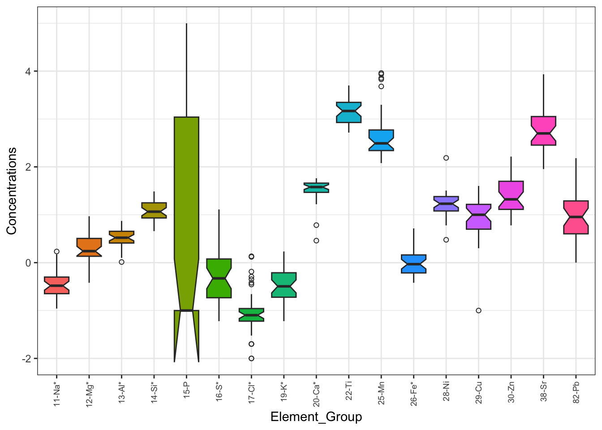
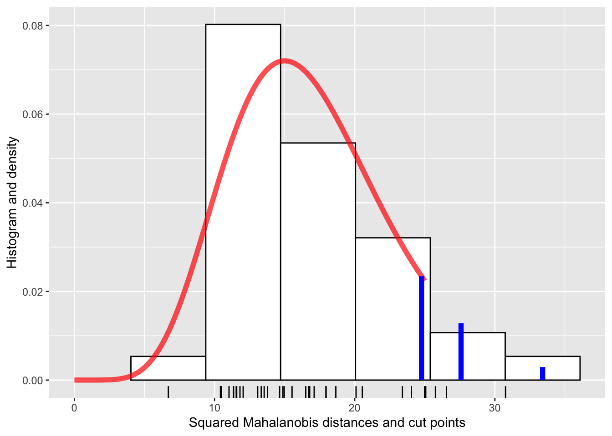
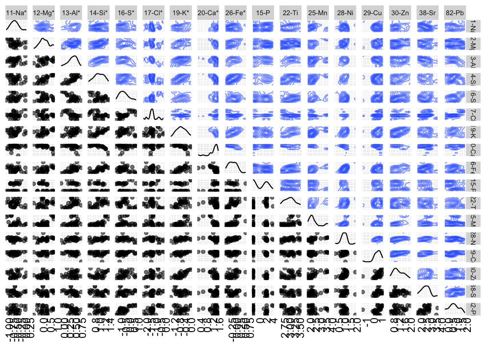

#Change table around to long ways for boxplots in future as current table arrangement didnt work.
#This one incase we need it for the non-transformed.
Table1_long <- Table1 %>%
pivot_longer(
cols = -Elements,
names_to = "Element_Group",
values_to = "Concentrations"
)
#Main Table we use for boxplot
Table1_long_log <- Table1_log %>%
pivot_longer(
cols = -Elements,
names_to = "Element_Group",
values_to = "Concentrations"
)Group 8 Project
PIXE analysis on Maya blue in Prehispanic and colonial mural paintings
Introduction
The original article, PIXE analysis on Maya blue in Prehispanic and colonial mural paintings, by Sanchez del Rio et al (2006), sampled, analysed and grouped using PCA on murals containing Maya Blue across different archaeological sites. Across the sites they collected 35 samples from murals and either the elements concentration percent or the ratio of micro gram to gram ratio of that element in the mural. From these murals they sampled 17 different chemical elements from sodium to lead. They found with their PCA that 70% of the total variance in the sample population can be described using only the first three principle components and was similar to what was observed in other art forms. The three zones found were CEC, Prehispanic, and convents. with the first clustering in a small group separate from the rest of the samples.
The aim of this analysis is too find groups within the data and reproduce what was found in the original paper. The reason for this is to support the conclusions made by Sanchez del rio et al (2006) about the 3 zones found in the data during their analysis. By doing this we can reassert the claims made about the differences between the different types of murals and their distinct zones of style. This report will contain both a quantitative and qualitative analysis of the data, as well as PCA and cluster analysis to explore the possible groups in the data.
Method
Explain Data: Number of observations, variables, variables measured, and mention/reference table 1 from paper.
Statistical Methods we are going to use} (Can put code in here for what we do to show the method of doing it if needed but I will talk to lecturer about if we need to or not.
We are doing this on the elements, comparing them to each other to find patterns, etc. names down the rows of the table are just the observations
Methods we are doing based off lectures, can change if needed
- Data Transformation
There are a few problems with the original data set given in Table 1 of the original paper that need to be corrected to accurately analysis the data. 1. Original Data contains both percentages and Ratios of ug/g (micro gram/gram) concentrations of elements in each mural sample. This makes the two sets of concentrations incomparable due to percentages ceiling of 100. To fix this a log10 transformation will be done on the data, as done in the original paper. 2. To do a log10 transformation we must deal with the () bracketed values in the ratio concentrations. These are estimated concentrations that are below the detection limit. To deal with this in the data we can just treat them as the values estimated and remove the brackets for analysis. 3. Lastly we need to deal with the [] in the data set. These values are specifically listed as 0, but aren’t considered 0. These values are considered close to the detection limit. As log10(0) is not a real number, for the analysis we will convert 0’s in the dataset to 0.1 as a pseudo-count. This will both allow us to compute these values and not shrink the sample size.
- Descriptive Statistics (mean, median, sd, min, max of each variable)
#Box Plot of transformed data
decp_boxplot <- ggplot(data = Table1_long_log, aes(x = Element_Group, y = Concentrations)) +
geom_boxplot(aes(fill = Element_Group), notch = TRUE, outlier.shape = 1.5) +
theme_bw() +
theme(axis.text.x = element_text(size = 7, angle = 90, hjust = 1, vjust = 0.5),
legend.position = "none")Check normality
- Mahalanobis Distance Plot
Table1_elements_log <- Table1_log[, -1]
mu_hat <- colMeans(Table1_elements_log)
Sigma_hat <- cov(Table1_elements_log)
p <- ncol(Table1_elements_log)
dM <- mahalanobis(Table1_elements_log, center=mu_hat, cov=Sigma_hat)
upper.quantiles <- qchisq(c(.9, .95, .99), df=p)
density.at.quantiles <- dchisq(x=upper.quantiles, df=p)
cut.points <- data.frame(upper.quantiles, density.at.quantiles)
dm_plot <- ggplot(data.frame(dM), aes(x=dM)) +
geom_histogram(aes(y=after_stat(density)), bins=nclass.FD(dM),
fill="white", col="black") +
geom_rug() +
stat_function(fun=dchisq, args = list(df=p),
col="red", linewidth=2, alpha=.7, xlim=c(0,25)) +
geom_segment(data=cut.points,
aes(x=upper.quantiles, xend=upper.quantiles,
y=rep(0,3), yend=density.at.quantiles),
col="blue", size=2) +
xlab("Squared Mahalanobis distances and cut points") +
ylab("Histogram and density")Warning: Using `size` aesthetic for lines was deprecated in ggplot2 3.4.0.
ℹ Please use `linewidth` instead.2. Chi-squareExploratory pairs plot 17x17 for the 17 variables
Histograms with notched box plots for each variable to show distribution
contours to show 3rd box plots (can also just do heat map for with contours painted on)
Mahalanobis-coloured scatter plots
{All of this in one plot, as seen in the one in inference - 03.pdf
pairs <- ggpairs(data = Table1_elements_log,
ggplot2::aes(alpha=.5), #Add col=suprise when done the dm^2 work
upper = list(continuous = "density", combo = "box_no_facet")) +
ggplot2::scale_color_manual(values=c("lightgray", "green", "blue", "red")) +
ggplot2::theme(axis.text.x = element_text(angle=90, hjust=1)) +
ggplot2::theme(
axis.text = ggplot2::element_blank(),
axis.ticks = ggplot2::element_blank(),
strip.text = ggplot2::element_text(size = 7)
)- Correlation Heat map
Principle component analysis (For the reproducing question)
- Scree plot
- scores plot
- loadings
- Cluster analysis
Results
- Show and explain through the analysis of what we described in the method. (Plots will go in here with explanations and thoughts under each.
- Descriptive Statistics (mean, median, sd, min, max of each variable)
| Descriptive Statistics of Elemental Concentrations | |||||
| Non-Transformed | |||||
| Element | Mean | SD | Median | Minimum | Maximum |
|---|---|---|---|---|---|
| 11-Na* | 0.45 | 0.37 | 0.33 | 0.11 | 1.71 |
| 12-Mg* | 2.91 | 2.53 | 1.74 | 0.38 | 9.30 |
| 13-Al* | 3.45 | 1.40 | 3.32 | 1.03 | 7.43 |
| 14-Si* | 13.91 | 6.86 | 11.60 | 4.55 | 30.70 |
| 16-S* | 1.71 | 3.02 | 0.47 | 0.06 | 12.90 |
| 17-Cl* | 0.20 | 0.32 | 0.08 | 0.01 | 1.36 |
| 19-K* | 0.47 | 0.40 | 0.32 | 0.06 | 1.71 |
| 20-Ca* | 35.78 | 13.29 | 37.90 | 2.88 | 57.80 |
| 26-Fe* | 1.15 | 0.87 | 0.93 | 0.38 | 5.18 |
| 15-P | 4,759.19 | 18,652.00 | 0.10 | 0.10 | 99,600.00 |
| 22-Ti | 1,846.57 | 1,241.87 | 1,470.00 | 520.00 | 5,010.00 |
| 25-Mn | 1,359.71 | 2,545.58 | 310.00 | 120.00 | 9,120.00 |
| 28-Ni | 21.69 | 24.18 | 17.00 | 3.00 | 154.00 |
| 29-Cu | 12.35 | 9.75 | 10.00 | 0.10 | 40.00 |
| 30-Zn | 34.77 | 34.45 | 21.00 | 6.00 | 164.00 |
| 38-Sr | 1,021.43 | 1,703.83 | 500.00 | 90.00 | 8,580.00 |
| 82-Pb | 21.69 | 31.00 | 9.00 | 1.00 | 152.00 |
| Descriptive Statistics of Elemental Concentrations | |||||
| Log10 Transformation | |||||
| Element | Mean | SD | Median | Minimum | Maximum |
|---|---|---|---|---|---|
| 11-Na* | −0.44 | 0.28 | −0.48 | −0.96 | 0.23 |
| 12-Mg* | 0.33 | 0.35 | 0.24 | −0.42 | 0.97 |
| 13-Al* | 0.50 | 0.19 | 0.52 | 0.01 | 0.87 |
| 14-Si* | 1.09 | 0.22 | 1.06 | 0.66 | 1.49 |
| 16-S* | −0.23 | 0.61 | −0.33 | −1.22 | 1.11 |
| 17-Cl* | −1.02 | 0.52 | −1.10 | −2.00 | 0.13 |
| 19-K* | −0.47 | 0.35 | −0.49 | −1.22 | 0.23 |
| 20-Ca* | 1.50 | 0.26 | 1.58 | 0.46 | 1.76 |
| 26-Fe* | −0.02 | 0.25 | −0.03 | −0.42 | 0.71 |
| 15-P | 1.03 | 2.17 | −1.00 | −1.00 | 5.00 |
| 22-Ti | 3.18 | 0.28 | 3.17 | 2.72 | 3.70 |
| 25-Mn | 2.67 | 0.55 | 2.49 | 2.08 | 3.96 |
| 28-Ni | 1.23 | 0.27 | 1.23 | 0.48 | 2.19 |
| 29-Cu | 0.92 | 0.48 | 1.00 | −1.00 | 1.60 |
| 30-Zn | 1.38 | 0.37 | 1.32 | 0.78 | 2.21 |
| 38-Sr | 2.74 | 0.45 | 2.70 | 1.95 | 3.93 |
| 82-Pb | 0.96 | 0.61 | 0.95 | 0.00 | 2.18 |
Box Plot
Notch went outside hinges
ℹ Do you want `notch = FALSE`?
- Normality Check

- Correlation Heat map
- Exploratory pairs plot 17x17 for the 17 variables

- Principle component analysis (For the reproducing question)
- Cluster analysis
Discussion
Answering the questions from the document and any other conclusions we have from the analysis
- Can you find groups in these data?
- Can you reproduce Fig. 2? Do you agree with the conclusions the authors draw about the “zones”?
References
Andonie, R., and I. Dzitac. 2010. “How to Write a Good Paper in Computer Science and How Will It Be Measured by ISI Web of Knowledge.” International Journal of Computers, Communications & Control V (4): 432–44. https://doi.org/10.15837/ijccc.2010.4.2493.
Frery, A. C., L. Gomez, and A. C. Medeiros. 2020. “A Badging System for Reproducibility and Replicability in Remote Sensing Research.” IEEE Journal of Selected Topics on Applied Earth Observations and Remote Sensing 13: 4988–95. https://doi.org/10.1109/JSTARS.2020.3019 418.
Sánchez del Río, M., Martinetto, P., Solís, C. & Reyes-Valerio, C. (2006), ‘PIXE analysis on Maya blue in Prehispanic and colonial mural paintings’, Nuclear Instruments and Methods in Physics Research Section B: Beam Interactions with Materials and Atoms 249(1–2), 628–632.